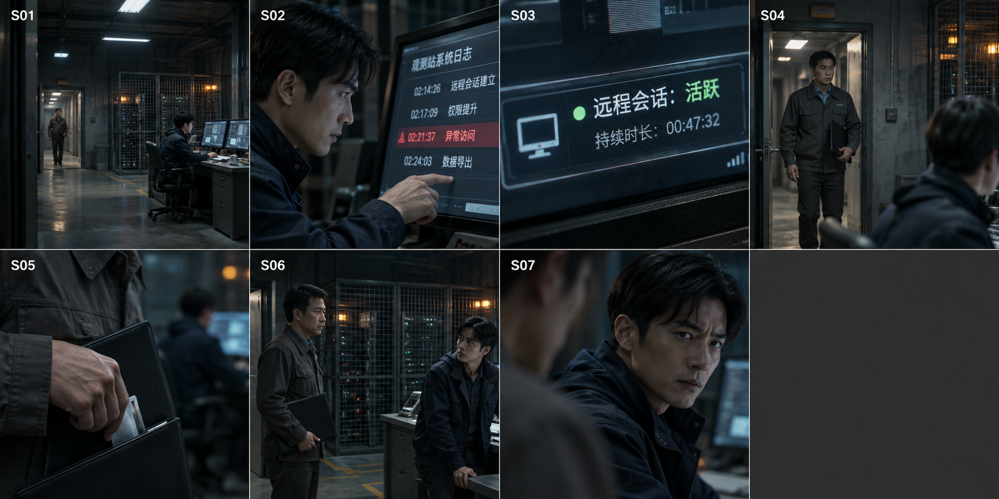
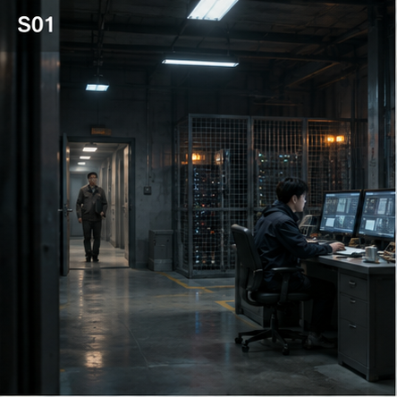
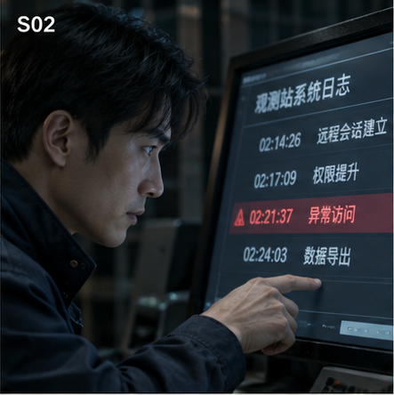
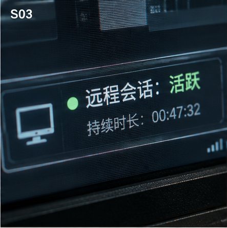
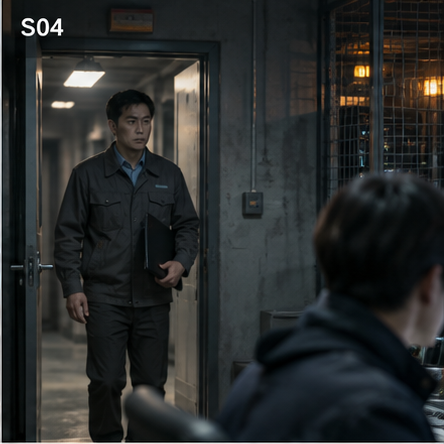
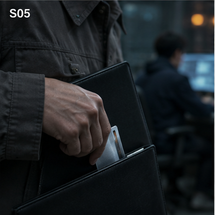
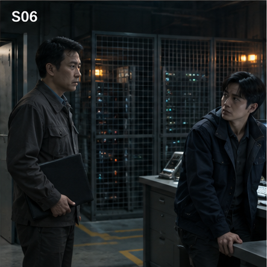
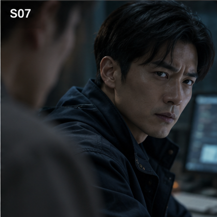

专业影视Skill · 原创场景《失联观测站》
源自《妖猫传》研究中的两种导演方法——观众信息提前获知与人物入场调度；不复制原片人物、镜头、场景与电影帧。
真实原创AI分镜总板

一次生成得到一张总板，裁切为7张独立文件；不是7次独立推理。源图SHA已写入摄影交接文件，电影原片截帧未参与候选生成。
可观看的32秒静态预演
这是AI静帧时序预演，非AI视频运镜、非真实表演，不可作为最终成片。7张图按各自原分镜时长排列。
专业摄影与独立审片结果
依据开源 plan-camera-shots 和 review-and-assemble 的输入输出职责，记录机位、镜头焦点、人物起止位置、道具状态、资产绑定与不通过原因。几何坐标是此场景的提议值，并非从原片测量。


镜头动作 调查员A在右侧终端核对断线告警；管理员B仍在门外走廊，双方未交谈
摄影 {'unit': 'm', 'x': 0.5, 'y': 3.2, 'z': 1.5}m / 28mm / 对焦：A@console
切镜理由 观众已理解空间，切近人物手上的新信息
声音 低频空调声；终端提示短音
需处理的问题
- 图中B已站在敞开的入口内或门槛附近；需要复核其最初是否仍在走廊，而非提前入场

镜头动作 A对照断线时间与新日志，手指停在异常时间戳上，停顿半秒
摄影 {'unit': 'm', 'x': 3.0, 'y': 1.8, 'z': 1.45}m / 50mm / 对焦：A hand and upper log
切镜理由 角色看上部时间，而下部屏幕还藏着观众可读的新线索
声音 纸页摩擦；环境声压低
需处理的问题
- 日志画面内容由图像生成器创造；显示的时间戳和原剧本的断线时刻没有逐字符对照依据

镜头动作 画面显示小字REMOTE LOGIN ACTIVE；A的手指仍停在画框边缘上部日志附近
摄影 {'unit': 'm', 'x': 3.5, 'y': 1.6, 'z': 1.5}m / 85mm / 对焦：lower REMOTE_LOGIN status
切镜理由 用脚步声从屏幕信息带向尚在门外的另一人
声音 门外脚步由远而近；无额外提示音乐
需处理的问题
- 画面为远程会话状态，需与S02原本的日志时间矛盾建立可读的文字因果

镜头动作 B从走廊走到控制室左门口，整理文件夹，停在门边，视线掠过A
摄影 {'unit': 'm', 'x': 1.8, 'y': 2.7, 'z': 1.45}m / 40mm / 对焦：B crossing doorway
切镜理由 B停住后，观众目光被他手上的东西吸引
声音 真实脚步、衣料摩擦，延续上镜脚步声
需处理的问题
- B站在门口并握有文件夹，尚需视频动作才能验证连续跨门槛走位

镜头动作 B把金属门禁卡塞进文件夹下层，视线短暂转向背对自己的A，A没有看见
摄影 {'unit': 'm', 'x': 1.15, 'y': 3.6, 'z': 1.2}m / 85mm / 对焦：B hand, badge, folder
切镜理由 看清藏物动作后，切向人物第一次共享的对话空间
声音 门禁卡与纸张的轻摩擦；房间嗡鸣不变
需处理的问题
- 门禁卡可见于文件夹边缘，A处在虚焦背景；需验证角色是否确实看不见

镜头动作 A仍站终端前，侧身问“断线后怎么还有日志？”；B停一拍答“也许只是缓存”。双方不靠近
摄影 {'unit': 'm', 'x': 2.9, 'y': 2.25, 'z': 1.48}m / 40mm / 对焦：A and B in two-shot
切镜理由 B话音落后，切给A的迟疑而非把怀疑说破
声音 低声对白、A问句末尾环境声回升
需处理的问题
- 两名演员相对位置与此前总体一致，但人物面容需进行身份一致性核验

镜头动作 A没有立刻反驳，缓慢移回视线到终端上部；B还在门边等待，二人都没有触碰藏起的卡
摄影 {'unit': 'm', 'x': 3.2, 'y': 2.1, 'z': 1.55}m / 85mm / 对焦：A eyes; B shoulder in left foreground
切镜理由 32秒场景止于尚未回答的远程登录悬念，为下一场提供叙事钩子
声音 无配乐，保留终端低鸣和停顿
需处理的问题
- 剧情要求A目光转回终端上部；图像里A明显看向左侧前景人物，动作方向不符，需要重新生成
当前可证实的边界
摄影交接通过结构检查，但场景几何仍待制片确认；S07视线明显偏离设定，拒收。原创画面存在且可解码，不等于身份一致性、完整7镜导演质量通过。影片原片的86镜头复刻任务与这7个原创候选是不同工程任务集。
作品导出门禁继续阻断：没有通过签核的动态镜头，不能把静帧预演当最终影片。